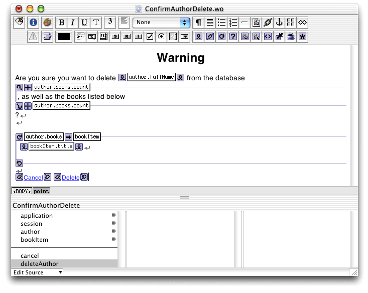

| PATH |

When the user deletes an author, she doesn't get a warning telling her that all the books related to that author are going to be deleted as well. In this section, you'll add a component that displays such a warning.
Though conceptually more complex, the design and implementation of the logic for deleting authors is just as simple as that for books. The only significant difference is that the application asks the user for confirmation before deleting the author, because this action has the side effect of removing additional objects from the object store that the user may not be aware of.
You'll add a component that displays the author that the user wants to delete, along with all related books, and asks for confirmation. If the user changes her mind, she'll be returned to the Main component. If the user clicks Delete, the author and related books are deleted from the editing context (the actual delete transaction takes place when the user clicks Save on the Main page).
(See "Defining a New Component" for details.)
ConfirmAuthorDelete.wo in
WebObjects Builder.author (Author),
with accessor methodsbookItem (Book),
without accessor methodscancel (Main)deleteAuthor (Main)Figure 12-6 ConfirmAuthorDelete.wo
ConfirmAuthorDelete.wo.Edit the deleteAuthor method
so that it looks like Listing 12-15.
Listing 12-15 The deleteAuthor method in ConfirmAuthorDelete.java
public Main deleteAuthor() {
Main nextPage = (Main)pageWithName("Main");
// get session
Session session = (Session)session();
session.deleteAuthor(author);
return nextPage;
}
The Main component needs to display the ConfirmAuthorDelete
component when its deleteAuthor action
is invoked. You accomplish that by modifying the deleteAuthor method
in Main.java so that it looks like Listing 12-16.
Listing 12-16 The deleteAuthor method in Main.java—returns ConfirmAuthorDelete component
public ConfirmAuthorDelete deleteAuthor() {
ConfirmAuthorDelete nextPage = (ConfirmAuthorDelete)pageWithName("ConfirmAuthorDelete");
nextPage.setAuthor(authorItem);
return nextPage;
}
Build and run the application. Create a new author, add several books, and save your changes. (You can use EOModeler to browse the tables's contents and confirm that the new information has been added to the database.) Click Delete on the newly added author. You should be presented with a confirmation page similar to Figure 12-7.
Figure 12-7 The ConfirmAuthorDelete component in action
If you click Cancel, you are simply returned to the Main page.
Clicking Delete causes the deleteAuthor method
in ConfirmAuthorDelete.java to
be invoked. In turn, it invokes the session's deleteAuthor method,
which removes the author from the authorList array
and adds it to the editing context's list of enterprise objects
to delete.
© 2001 Apple Computer, Inc.